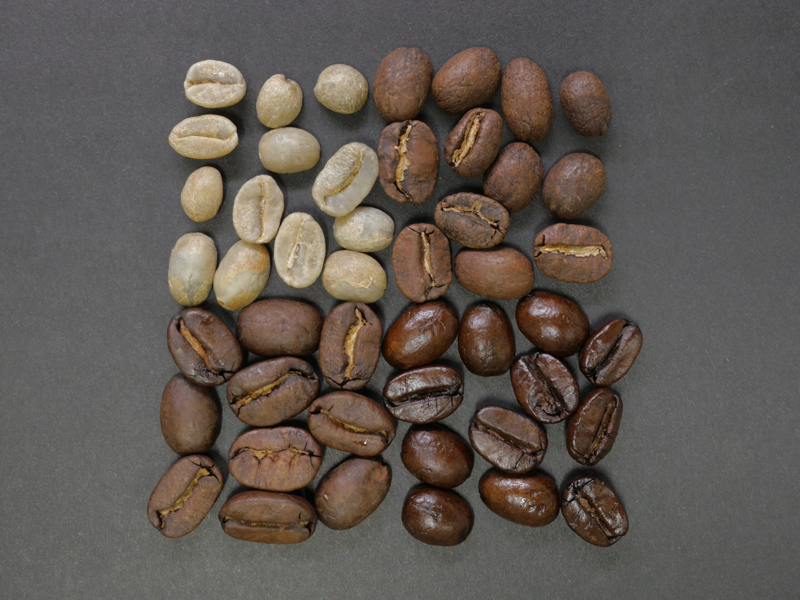
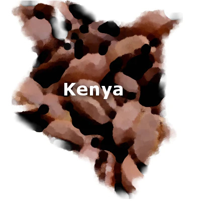
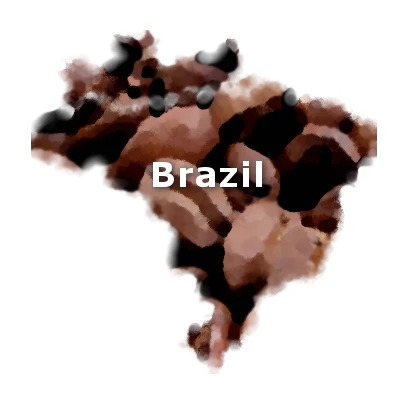
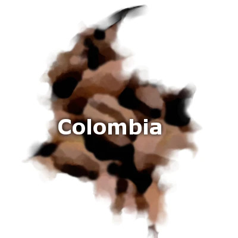
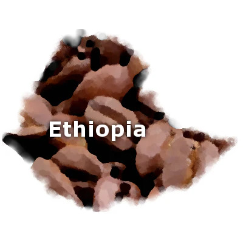
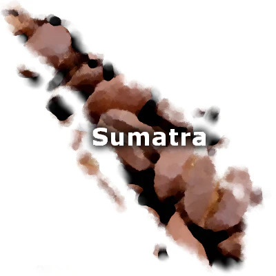

Learn About Coffee Bean Types
Understanding different coffee bean types is essential for exploring the world of coffee. Each type of coffee bean offers a unique flavor profile, aroma, and characteristics.
Join us as we delve into the fascinating world of coffee beans, from the renowned Arabica to the exotic Geisha, and discover what makes each type special.
Image source: cafédirect.co.uk
Kenya AA Coffee
Kenya AA coffee is renowned for its bright acidity, full body, and rich fragrance. The "AA" denotes the bean size, signifying a top-grade coffee. Grown at elevations over 2,000 meters, this coffee is often described as having a wine-like taste with fruity notes.
This coffee is produced in the rich volcanic soils of Kenya's highlands, where the combination of altitude, soil, and climate creates the perfect conditions for cultivating superior quality beans.
Kenya AA coffee is typically wet-processed, which accentuates its bright acidity and clean flavor profile. It's an ideal choice for those who appreciate a vibrant and lively coffee experience.
Image source: buycoffeecanada.com
Brazil Santos Coffee
Brazil Santos coffee, predominantly grown in the Minas Gerais region, is famous for its smooth flavor and medium-bodied profile. It exhibits a nutty sweet character, often with chocolatey overtones, making it a popular base for espresso blends.
The coffee beans from Brazil Santos are primarily processed using the dry method, which involves sun-drying the cherries before removing the beans. This imparts a unique sweetness and richness to the coffee.
Due to its versatile flavor profile, Brazil Santos coffee is widely used in various coffee blends, including espresso, where it adds depth and complexity to the final cup.
Image source: buycoffeecanada.com
Colombian Supremo Coffee
The largest size of Colombian coffee beans, Supremo, offers a mild, aromatic experience with a full-bodied complexity. It's smoothly balanced, featuring a slight sweetness with citrus notes, reflecting Colombia's rich coffee heritage.
Colombian Supremo coffee is grown in various regions across Colombia, each contributing to its unique flavor profile. The beans are often hand-picked from mountainous regions, ensuring only the ripest cherries are selected.
Once harvested, the beans undergo a meticulous processing method, typically washed or wet-processed, to enhance their clean and vibrant flavors. Colombian Supremo is celebrated for its consistent quality and delicious taste, making it a favorite among coffee enthusiasts worldwide.
Image source: buycoffeecanada.com
Ethiopian Yirgacheffe Coffee
Originating from Ethiopia, the birthplace of coffee, Yirgacheffe beans are often considered the best in the world. Known for their floral and tea-like aromas, these beans have a light body and offer delicate flavors with a hint of citrus.
Yirgacheffe coffee is meticulously processed using traditional methods, including washing and sun-drying. This careful processing preserves the beans' inherent flavors and aromas, resulting in a truly exceptional cup of coffee.
The unique terroir of the Yirgacheffe region, characterized by high altitudes and nutrient-rich soil, contributes to the coffee's distinct taste profile. It's no wonder that Ethiopian Yirgacheffe is highly sought after by coffee connoisseurs around the globe.
Image source: buycoffeecanada.com
Sumatra Mandheling Coffee
Grown on the Indonesian island of Sumatra, Mandheling coffee is named after the Mandheling people who traditionally grew it. This coffee is known for its full body, low acidity, and rich, earthy flavor with hints of chocolate and tropical spices.
Mandheling coffee undergoes a unique processing method known as wet-hulling, which gives it a distinctive flavor profile. The beans are semi-washed, resulting in a deep, complex taste with notes of cedar, tobacco, and spices.
This coffee's rich and syrupy body pairs well with milk, making it an excellent choice for espresso-based drinks like lattes and cappuccinos. Sumatra Mandheling is a favorite among those who enjoy bold and intense coffee flavors.
Image source: buycoffeecanada.com